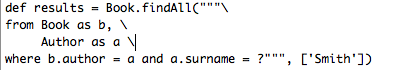

도메인 클래스는 모든 비지니스 어플리케이션에서 핵심이다. 도메인 클래스에는 비지니스 프로세스의 상태를 유지시키고 행동을 구현한다. 도메인 클래스는 서로 일대일 혹은 일대다 관계를 이룬다.GORM은 Grails에서 사용하는 객체 관계형 매핑 구현체이다. 내부적으로 Hibernate 3(아주 인기있고 유연한 오픈소스 ORM)를 이용하지만 Groovy의 동적인 성질과 관례 때문에 Grails의 도메인 클래스를 생성하는 것까지 포함하더라도 설정할게 별로 없다. 실제로 Grails는 정적 타이핑과 동적 타이핑을 모두 지원한다.Grails 도메인 클래스는 자바로도 작성할 수 있다. Hibernate와 통합하는 장을 보면 자바로 Grails의 도메인 클래스를 작성하는 법을 확인할 수 있다. 그러나 여전히 동적인 영속성 메소드를 사용한다. 다음은 GORM을 활용하는 예이다:def book = Book.findByTitle("Groovy in Action")book
.addToAuthors(name:"Dierk Koenig")
.addToAuthors(name:"Guillaume LaForge")
.save()grails create-domain-class Person
grails-app/domain/Person.groovy 에 생성되며 그 내용은 다음과 같다:
DataSource에 dbCreate 프로퍼티가 “update”, “create”, “create-drop”중에 하나로 설정하면 Grails는 자동으로 데이터베이스 테이블을 생성하거나 수정한다.
다음과 같이 클래스에 몇 개의 프로퍼티를 추가한다:class Person {
String name
Integer age
Date lastVisit
}Create
Groovy의 new 연산자를 사용하여 도메인 클래스를 생성하고 프로퍼티 값을 입력하고 save 메소드를를 호출한다:def p = new Person(name:"Fred", age:40, lastVisit:new Date())
p.save()
Read
Grails는 내부적으로 도메인 클래스에 id 프로퍼티를 추가한다.def p = Person.get(1)
assert 1 == p.id
Update
특정 인스턴스의 정보를 업데이트하기 위해서 필요한 프로퍼티들을 변경하고 단순하게 다시 save 메소드를 호출하면 된다:def p = Person.get(1)
p.name = "Bob"
p.save()
Delete
delete 메소드로 인스턴스를 삭제한다:def p = Person.get(1)
p.delete()
grails create-domain-class Book
grails-app/domain/Book.groovy 파일이 다음과 같은 내용으로 생성된다:
패키지를 사용하려면 도메인 클래스의 위치를 도메인 디렉토리 밑의 하위 디렉토리로 옮기고 Groovy 패키지 규칙(Java와 동일하다)에 따라 패키지를 정의하면 된다.
위 클래스는 자동적으로 클래스 이름과 동일한 데이터베이스의 book 테이블과 매핑된다. 이 규칙은 ORM Domain Specific Language 도메인 명세 언어(ORM Domain Specific Language)로 수정할 수 있다.이제 도메인 클래스를 만들었고 Java 데이터 형식을 이용하여 프로퍼티를 정의해보자. 다음의 예를 보면:class Book {
String title
Date releaseDate
String ISBN
}Example A
class Face {
Nose nose
}
class Nose {
}Example B
class Face {
Nose nose
}
class Nose {
Face face
}Example C
class Face {
Nose nose
}
class Nose {
static belongsTo = [face:Face]
}new Face(nose:new Nose()).save()
Face:위 예제는 Face와 Nose가 모두 잘 저장되지만 Face가 비영속 객체(transient object)므로 역순으로 생성하면 저장이 안되고 오류가 발생할 것이다.new Nose(face:new Face()).save() // will cause an error
def f = Face.get(1)
f.delete() // both Face and Nose deleted
// error here without belongsTo
def f = Face.get(1)
f.delete()// no error as we explicitly delete both
def f = Face.get(1)
f.nose.delete()
f.delete()
class Face {
Nose nose
}
class Nose {
static belongsTo = Face
}Author 와 Book 의 관계가 그렇다. hasMany를 이용하여 이런 관계를 정의한다.class Author {
static hasMany = [ books : Book ] String name
}
class Book {
String title
}
ORM DSL 은 외래키 관계을 사용하여 단방향 관계를 가능하게 한다.
Grails는 자동으로 도메인 클래스의 hasMany 가 명시된 프로퍼티들을 java.util.Set 형식으로 만든다. 따라서 컬렉션(collection)의 이터레이션(iteration)을 사용할 수 있다.def a = Author.get(1)a.books.each {
println it.title
}
Grails에서 사용하는 기본 패치(fetch) 전략은 필요할 때(lazily) 패치하는 "lazy" 전략이다. n+1 문제가 발생하지 않도록 조심해야 한다."eager" 패치 전략을 취하도록 query의 일부로서 ORM DSL 에 명시 할 수도 있다.
연쇄적으로 저장, 갱신하는 것이 기본적인 연쇄 방식이고 belongsTo가 명시되어 있지 않으면 연쇄적으로 삭제되지도 않는다.class Author {
static hasMany = [ books : Book ] String name
}
class Book {
static belongsTo = [author:Author]
String title
}class Airport {
static hasMany = [flights:Flight]
static mappedBy = [flights:"departureAirport"]
}
class Flight {
Airport departureAirport
Airport destinationAirport
}class Airport {
static hasMany = [outboundFlights:Flight, inboundFlights:Flight]
static mappedBy = [outboundFlights:"departureAirport", inboundFlights:"destinationAirport"]
}
class Flight {
Airport departureAirport
Airport destinationAirport
}class Book {
static belongsTo = Author
static hasMany = [authors:Author]
String title
}
class Author {
static hasMany = [books:Book]
String name
}new Author(name:"Stephen King")
.addToBooks(new Book(title:"The Stand"))
.addToBooks(new Book(title:"The Shining"))
.save()
new Book(name:"Groovy in Action")
.addToAuthors(new Author(name:"Dierk Koenig"))
.addToAuthors(new Author(name:"Guillaume Laforge"))
.save()
Grails의 Scaffolding 기능은 현재 다대다 관계를 지원하지 않는다. 따라서 관계를 관리하는 코드를 직접 작성해야 한다.
association 외에도 Grails는 결합(Composition)도 지원한다. 클래스를 각각의 테이블에 매핑하지 않고 하나의 테이블에 "포함하여" 매핑할 수 있다.class Person {
Address homeAddress
Address workAddress
static embedded = ['homeAddress', 'workAddress']
}
class Address {
String number
String code
}
grails-app/domain 디렉토리에 새로운 Groovy 파일을 만들고 그 파일에 Address 클래스를 만들면 address 테이블이 생성된다. 이 것을 원하지 않으면 grails-app/domain/Person.groovy 파일의 Person 클래스 아래에 Address 클래스를 만든다. Groovy에서는 한 파일에 여러개의 클래스를 정의할 수 있다.
GORM 에서는 추상 부모 클래스와 영속 GORM 엔터티에서 상속받을 수 있다. 예를 들면:class Content {
String author
}
class BlogEntry extends Content {
URL url
}
class Book extends Content {
String ISBN
}
class PodCast extends Content {
byte[] audioStream
}Content 와 다른 특징을 가진 자식 클래스들을 만들었다.Considerations(고려 사항)
Grails는 기본적으로 상속 구조당 하나의 테이블(table-per-hierarchy)에 매핑한다. 부모 클래스와 그 자식 클래스들은(BlogEntry, Book, 등등) 동일한 테이블을 사용하고 식별 칼럼을 두어 구분한다.상속 구조당 하나의 테이블(table-per-hierarchy)에 매핑하는 것은 'not null'인 프로퍼티를 가질 수 없다는 단점이 있다. 다른 방법으로 ORM DSL을 이용하여 클래스당 하나의 테이블(table-per-subclass)에 매핑하는 전략을 사용하는 것이다.그러나 클래스당 하나의 테이블(table-per-subclass)에 매핑하는 전략을 과도하게 사용하면 조인 쿼리가 남발되기 때문에 쿼리 성능이 형편없어 진다. 우리는 상속을 남용하지말고 상속 계층를 너무 깊게 가져가지 말라고 권고한다.Polymorphic Queries(쿼리의 다형성)
상속은 다형적으로(polymorphically) 질의할 수 있게 해준다. 예를 들어 Content 부모 클래스에서 list 메소드를 사용하면 모든 자식 클래스들이 반환된다:def content = Content.list() // 블로그 글, 책, 팟 캐스트 모두 나열된다.
content = Content.findAllByAuthor('Joe Bloggs') // 저자를 기준으로 찾는다.def podCasts = PodCast.list() //팟 캐스트만 나열된다.Sets of objects(집합)
관계를 만들면 GORM은 기본적으로 java.util.Set을 이용한다. 이 것은 정렬되지 않으며 중복을 허용하지 않는 컬렉션이다. 다음의 Author 클래스가 있다면class Author {
static hasMany = [books:Book]
}java.util.Set형식으로 만든다. 컬렉션을 사용할 때 정렬되지 않았다는 것이 문제가 될 수 있다. 정렬된 컬렉션을 사용하길 원한다면 다음처럼 books를 SortedSet으로 명시한다.class Author {
SortedSet books
static hasMany = [books:Book]
}java.util.SortedSet을 사용하는 경우에는 Book 클래스에 java.lang.Comparable을 구현해야 한다.class Book implements Comparable {
String title
Date releaseDate = new Date() int compareTo(obj) {
releaseDate.compareTo(obj.releaseDate)
}
}Lists of objects(리스트)
단순하게 집합을 객체가 추가된 순서로 유지하고 배열처럼 인덱스로 객체를 참조하게 하고 싶을 땐 List를 사용하면 된다:class Author {
List books
static hasMany = [books:Book]
}author.books[0] // 첫 번째 책
book_idx에 컬렉션 요소(element)의 인덱스를 저장한다.List를 사용할 때 요소를 저장하기 전에 컬렉션에 추가해야 한다. 그렇지 않으면 Hibernate는 예외를 던질 것이다(org.hibernate.HibernateException: null index column for collection):// This won't work!
def book = new Book(title: 'The Shining')
book.save()
author.addToBooks(book)// Do it this way instead.
def book = new Book(title: 'Misery')
author.addToBooks(book)
author.save()
Maps of Objects(맵)
만약 string/value 쌍만으로 이루어진 단순한 맵을 원하면 다음처럼 사용하면 된다:class Author {
Map books // map of ISBN:book names
}def a = new Author()
a.books = ["1590597583":"Grails Book"]
a.save()class Book {
Map authors
static hasMany = [authors:Author]
}def a = new Author(name:"Stephen King")def book = new Book()
book.authors = [stephen:a]
book.save()hasMany 프로퍼티로 맵의 요소의 형식을 정의할 수 있다. 이 맵의 키는 반드시 문자열이어야 한다.
Grails에서 잊지 말아야 할 것이 있는데 Grails는 내부적으로 Hibernate 을 사용하여 영속성을 구현했다. ActiveRecord 나 iBatis 를 사용한적이 있다면 Hibernate의 "세션 모델"이 조금 어색할 수 있다.Grails는 자동으로 현재 실행하는 요청을 Hibernate 세션에 바인드(bind)시킨다. 이 것은 우리가 save, delete 등의 GORM 메소드를 투명하게 사용할 수 있게 해준다.
다음은 save 메소드를 사용하는 예이다.def p = Person.get(1)
p.save()
def p = Person.get(1)
p.save(flush:true)
def p = Person.get(1)
try {
p.save(flush:true)
}
catch(Exception e) {
// deal with exception
}def p = Person.get(1)
p.delete()
def p = Person.get(1)
p.delete(flush:true)
deleteAll 메소드를 제공하지 않는다. 이진 flags/logic을 이용해서 데이터를 삭제할 수 있다.정말 일괄 삭제해야 한다면 executeUpdate 메소드를 이용하여 DML 문을 실행시켜서 삭제할 수 있다.Customer.executeUpdate("delete Customer c where c.name = :oldName", [oldName:"Fred"])belongsTo 설정이 우리가 기억해야 할 핵심이다.일대일, 일대다, 다대다 관계에 상관없이 belongsTo를 정의했다면 갱신과 삭제는 소유한 클래스에서 그 소유물(관계의 다른 쪽)까지 연쇄적으로 동작할 것이다._belongsTo를 정의하지 않으면_ 연쇄 작업은 일어나지 않으며 모든 객체를 일일이 손수 저장해야 한다.여기에 한 예가 있다.class Airport {
String name
static hasMany = [flights:Flight]
}
class Flight {
String number
static belongsTo = [airport:Airport]
}Airport를 생성하고 Flight를 몇 개 추가한 후 Airport를 저장하면 Flight도 연쇄적으로 저장된다. 결국 생성한 모든 객체가 저장된다.new Airport(name:"Gatwick")
.addToFlights(new Flight(number:"BA3430"))
.addToFlights(new Flight(number:"EZ0938"))
.save()
Airport를 삭제하면 관련된 모든 Flight도 삭제될 것이다.def airport = Airport.findByName("Gatwick")
airport.delete()belongsTo를 제거하면 위의 코드는 더 이상 연쇄적으로 삭제하지 않는다. ORM DSL을 사용하여 연쇄 행동을 제어할 수 있다.
GORM은 기본적으로 Lazy 패칭을 사용한다. 다음 예가 이를 잘 설명한다.class Airport {
String name
static hasMany = [flights:Flight]
}
class Flight {
String number
static belongsTo = [airport:Airport]
}def airport = Airport.findByName("Gatwick")
airport.flights.each {
println it.name
}Airport 인스턴스를 가져오기 위해 단 하나의 SQL을 실행하고 Flight마다 추가로 1개의 쿼리를 더 실행할 것이다. 결국에 N+1번 질의한다.관계(association)에 드물게 접근하는 경우에는 이 방법이 최적일 것이다. 전적으로 관계(association)의 사용빈도에 달려있다.다음과 같이 Eager 패칭을 사용하는 것으로 Lazy 패칭의 단점을 해결할 수 있다.class Airport {
String name
static hasMany = [flights:Flight]
static fetchMode = [flights:"eager"]
}Airport 인스턴스와 Flight 관계는 매핑 규칙에 따라 한번에 전부 로드될 것이다. 데이터베이스에 질의하는 빈도가 줄어드는 장점이 있지만 Eager Association이 너무 많으면 데이터베이스 전체를 메모리로 로드하게 될 수도 있으니 주의해야 한다.
ORM DSL을 이용하여 Lazy 패치없이 관계를 정의할 수 있다.
Optimistic Locking(낙관적 잠금)
기본적으로 GORM 클래스는 낙관적 잠금을 사용하도록 돼 있다. 낙관적 잠금은 Hibernate의 것을 이용하므로 데이터베이스의 version 컬럼에 버전을 저장한다.version 프로퍼티를 통해서 이 버전 컬럼을 읽을 수 있다. 사용하고 있는 영속성 인스턴스의 버전을 읽는다.def airport = Airport.get(10)println airport.version
def airport = Airport.get(10)try {
airport.name = "Heathrow"
airport.save(flush:true)
}
catch(org.springframework.dao.OptimisticLockingFailureException e) {
// deal with exception
}Pessimistic Locking(비관적 잠금)
비관적 잠금은 "SELECT * FOR UPDATE" 라는 SQL 문을 실행하는 것과 동일하게 데이터베이스의 특정 열을 잠근다. 잠긴 것이 해제될 때까지 다른 읽기가 블럭된다.lock 메소드를 이용하여 비관적 잠금을 사용할 수 있다.def airport = Airport.get(10)
airport.lock() // lock for update
airport.name = "Heathrow"
airport.save()
Listing instances(리스트)
단순하게 list 메소드를 사용하여 클래스의 모든 인스턴스를 조회할 수 있다:페이지정보(pagination)를 list 메소드의 인자로 넘길 수 있다:def books = Book.list(offset:10, max:20)
def books = Book.list(sort:"title", order:"asc")
Retrieval by Database Identifier(데이터베이스 식별자로 조회)
get 메소드에 데이터베이스 식별자를 인자로 넘겨서 조회할 수 있다.식별자들의 집합을 getAll 메소드의 인자로 넘겨서 인스턴스의 목록을 조회할 수 있다.def books = Book.getAll(23, 93, 81)
class Book {
String title
Date releaseDate
Author author
}
class Author {
String name
}Book 클래스는 title, releaseDate, author같은 프로퍼티를 가지고 있다. 이 프로퍼티들은 '메소드 표현식(method expressions)'에 따라 findBy findAllBy 메소드에서 사용된다.def book = Book.findByTitle("The Stand")book = Book.findByTitleLike("Harry Pot%")book = Book.findByReleaseDateBetween( firstDate, secondDate )book = Book.findByReleaseDateGreaterThan( someDate )book = Book.findByTitleLikeOrReleaseDateLessThan( "%Something%", someDate )Method Expressions(메소드 표현식)
GORM의 메소드 표현식은 findBy 같은 접두어 뒤에 프로퍼티들을 연결시켜서 완성된다. 기본식은 다음과 같다.Book.findBy[Property][Suffix]*[Boolean Operator]*[Property][Suffix]
def book = Book.findByTitle("The Stand")book = Book.findByTitleLike("Harry Pot%")Like로 인해 like 연산으로 동작한다.가능한 접미어들:
LessThan - less than the given valueLessThanEquals - less than or equal a give valueGreaterThan - greater than a given valueGreaterThanEquals - greater than or equal a given valueLike - Equivalent to a SQL like expressionIlike - Similar to a Like, except case insensitiveNotEqual - Negates equalityBetween - Between two values (requires two arguments)IsNotNull - Not a null value (doesn't require an argument)IsNull - Is a null value (doesn't require an argument)
You'll notice the last 3 effect the number of arguments required to the method as demonstrated by the example:def now = new Date()
def lastWeek = now - 7
def book = Book.findByReleaseDateBetween( lastWeek, now )
isNull and isNotNull require no arguments:def books = Book.findAllByReleaseDateIsNull()
Boolean logic (AND/OR)
Method expressions can also use a boolean operator to combine two criteria:def books =
Book.findAllByTitleLikeAndReleaseDateGreaterThan("%Java%", new Date()-30)And in the middle of the query to make sure both conditions are satisfied, but you could equally use Or:def books =
Book.findAllByTitleLikeOrReleaseDateGreaterThan("%Java%", new Date()-30)Querying Associations
Associations can also be used within queries:def author = Author.findByName("Stephen King")def books = author ? Book.findAllByAuthor(author) : []Author instance is not null we use it in a query to obtain all the Book instances for the given Author.Pagination & Sorting
The same pagination and sorting parameters available on the list method can also be used with dynamic finders by supplying a map as the final parameter:def books =
Book.findAllByTitleLike("Harry Pot%", [max:3,
offset:2,
sort:"title",
order:"desc"])def c = Account.createCriteria()
def results = c {
like("holderFirstName", "Fred%")
and {
between("balance", 500, 1000)
eq("branch", "London")
}
maxResults(10)
order("holderLastName", "desc")
}Conjunctions and Disjunctions(논리곱과 논리합)
위의 예에서 보여주듯이 and { }을 이용하여 논리블럭을 만들고 Criteria에 논리연산을 적용할 수 있다:and {
between("balance", 500, 1000)
eq("branch", "London")
}or {
between("balance", 500, 1000)
eq("branch", "London")
}not {
between("balance", 500, 1000)
eq("branch", "London")
}Querying Associations(관계 질의하기)
프로퍼티에 알 맞는 노드가 있으면 관계를 질의할 수 있다. 다음 예제는 Account 클래스는 많은 Transaction 객체를 가질 수 있다는 것을 말해준다.class Account {
…
def hasMany = [transactions:Transaction]
Set transactions
…
}transaction 프로퍼티을 사용하여 이 관계를 질의할 수 있다.def c = Account.createCriteria()
def now = new Date()
def results = c.list {
transactions {
between('date',now-10, now)
}
}transaction이 있었던 Account 인스턴스를 모두 찾는다.
그리고 그러한 관계를 질의하는 쿼리를 논리 블럭안에 넣을 수 있다.:def c = Account.createCriteria()
def now = new Date()
def results = c.list {
or {
between('created',now-10,now)
transactions {
between('date',now-10, now)
}
}
}Querying with Projections(프로젝션으로 질의하기)
프로젝션은 결과를 사용자 사정에 맞추는데(customize) 사용된다. 프로젝션을 사용하기 위해서는 Criteria 빌더 트리에 "projections" 노드를 정의해야 한다. projections 노드의 메소드은 Hibernate의 Projections 클래스의 메소드와 동일하다:def c = Account.createCriteria()def numberOfBranches = c.get {
projections {
countDistinct('branch')
}
}Using Scrollable Results(스크롤되는 결과의 사용)
scroll 메소드를 호출하여 Hiberate의 ScrollableResults 기능을 사용할 수 있다.def results = crit.scroll {
maxResults(10)
}
def f = results.first()
def l = results.last()
def n = results.next()
def p = results.previous()def future = results.scroll(10)
def accountNumber = results.getLong('number')
원하는 개수만큼 결과를 스크롤할 수 있는 result iterator이다. Query/ScrollableResults 패턴은 JDBC PreparedStatement/ResultSet 패턴과 매우 유사하고 메소드의 이름도 ResultSet의 것과 비슷하게 지어졌다.
하지만 JDBC와는 다르게 결과의 컬럼의 인덱스는 0부터 시작한다.Setting properties in the Criteria instance(Criteria 인스턴스의 프로퍼티를 설정하기)
빌더 트리에서 기술한 조건이 해석할 수 없으면 Criteria 인스턴스의 자체 프로퍼티를 설정하려고 시도한다. 그래서 이 클래스의 모든 프로퍼티에 접근하는 것이 가능하다. 아래의 예를 보면 Criteria 인스턴스의 setMaxResults와 setFirstResult 메소드가 호출된다.import org.hibernate.FetchMode as FM
…
def results = c.list {
maxResults(10)
firstResult(50)
fetchMode("aRelationship", FM.EAGER)
}Querying with Eager Fetching(Eager 패칭으로 질의하기)
Eager and Lazy Fetching 을 설명하면서 우리는 N+1 select 문제를 회피하는 방법에 대해 이미 다루었다. 하지만 Criteria를 이용하여 동일한 일을 할 수 있다:import org.hibernate.FetchMode as FM
...def criteria = Task.createCriteria()
def tasks = criteria.list{
eq("assignee.id", task.assignee.id)
fetchMode('assignee', FM.EAGER)
fetchMode('project', FM.EAGER)
order('priority', 'asc')
}Method Reference(메소드 레퍼런스)
만약 다음의 예제처럼 아무것도 없이 빌더를 실행하면:결과의 목록을 얻어오는 것이 빌더의 목적이므로 다음의 예제와 동일하게 작동된다:| 메소드 | 설명 |
|---|
|
| list | 기본 메소드로 조건에 만족하는 모든 열을 반환한다. |
| get | 단 한 개의 결과 집합(result set)를 반환한다. 이 메소드를 위한 Criteria는 단 한 개의 결과를 반환하도록 만들어져야 한다. 이 메소드와 단지 첫 열만을 얻어오는 것과 혼동하지 말아야 한다. |
| scroll | 스크롤되는 결과를 반환한다. |
| listDistinct | 서브쿼리나 관계를 이용할 때 결과 집합에서 동일한 열이 여러개 존재할 수 있는데 이 것으로 중복을 허용하지 않을 수 있다. CriteriaSpecification 클래스의 DISTINCT_ROOT_ENTITY와 동일하다. |
GORM에서는 HQL도 사용할 수 있다. Hiberate 문서의 14장 HQL: The Hibernate Query Language에서 HQL에대한 모든 것을 참고할 수 있다.GORM은 find, findAll executeQuery 등의 HQL을 사용할 수 있는 얼마간의 메소드들을 제공한다.def results =
Book.findAll("from Book as b where b.title like 'Lord of the%'")Positional and Named Parameters(위치 파라미터와 이름 파라미터)
쿼리에 필요한 값은 하드코딩하려 한다면 위치 파리미터를 사용할 수 있다:def results =
Book.findAll("from Book as b where b.title like ?", ["The Shi%"])def results =
Book.findAll("from Book as b where b.title like :search or b.author like :search", [search:"The Shi%"])Multiline Queries(여러 줄로 질의하기)
쿼리를 여러줄에 걸쳐서 만들어야 한다면 라인연결문자를 사용하라:
여러 줄 문자열을 만들기 위한 Groovy로 표현법은 HQL 쿼리에 사용할 수 없다.
Pagination and Sorting(페이지 매김과 정렬)
HQL에서도 패이지를 매길 수 있고 정열할 수 있다. 간단하게 메소드 끝에 맵 형식으로 페이지 매김과 정열 옵션을 기술한다.def results =
Book.findAll("from Book as b where b.title like 'Lord of the%'",
[max:10, offset:20, sort:"title", order:"asc"])The beforeInsert event(beforeInsert 이벤트)
객체가 데이터베이스에 저장되기 전에 실행된다.class Person {
Date dateCreated def beforeInsert = {
dateCreated = new Date()
}
}The beforeUpdate event(beforeUpdate 이벤트)
객체가 업데이트되기 전에 실행된다.class Person {
Date dateCreated
Date lastUpdated def beforeInsert = {
dateCreated = new Date()
}
def beforeUpdate = {
lastUpdated = new Date()
}
}The beforeDelete event(beforeDelete 이벤트)
객체가 삭제되기 전에 실행된다.class Person {
String name
Date dateCreated
Date lastUpdated def beforeDelete = {
new ActivityTrace(eventName:"Person Deleted",data:name).save()
}
}The onLoad event(onLoad 이벤트)
데이터베이스에서 객체가 로드될때 실행된다:class Person {
String name
Date dateCreated
Date lastUpdated def onLoad = {
name = "I'm loaded"
}
}Automatic timestamping(자동 시간도장)
위의 예에서 이벤트를 사용하여 lastUpdated와 dateCreated 프로퍼티를 업데이트하는 방법에 대해 알아보았다. GORM은 객체의 히스토리를 유지하는 다른방법을 제공한다. GORM에서는 단순히 lastUpdated와 dateCreated 프로퍼티만 정의하는 것만으로도 충분한다.이 기능이 맘에 들지 않는다면 끌 수 있다:class Person {
Date dateCreated
Date lastUpdated
static mapping = {
autoTimestamp false
}
}
GORM의 관례에 따르는 테이블, 컬럼 이름등이 마음에 든다면 이 것은 전혀 필요없다. 캐싱을 한다거나 GORM을 레거시 스키마에 매핑하려 할때에만 이 기능이 필요하다.
도메인 클래스에 정적 mapping 블럭을 사용하므로써 매핑 규칙을 정의할 수 있다:class Person {
..
static mapping = { }
}Table names(테이블 이름)
table을 사용하여 클래스가 매핑될 데이터베이스 테이블 이름을 정의할 수 있다.:class Person {
..
static mapping = {
table 'people'
}
}person이 아니라 people이라는 테이블에 매핑될 것이다.Column names(컬럼 이름)
데이터베이스의 컬럼에 매핑하는 규칙도 정의할 수 있다. 다음의 예제처럼 원하는 이름으로 매핑시킬 수 있다:class Person {
String firstName
static mapping = {
table 'people'
firstName column:'First_Name'
}
}firstName이고 column이라는 파라미터를 이용하여 어느 컬럼에 매핑할지 명시한다.Column type(컬럼 타입)
GORM은 DSL의 타입 속성(attribute)으로 Hibernate 타입을 설정할 수 있다. 이 것은 org.hibernate.types.UserType를 상속한 사용자 타입도 명시할 수 있고 타입에 어떻게 영속성을 부여할지 정의할 수 있게 한다. PostCodeType을 만들었고 이 것을 사용한다면 다음의 예제처럼 할 수 있다:class Address {
String number
String postCode
static mapping = {
postCode type:PostCodeType
}
}class Address {
String number
String postCode
static mapping = {
postCode type:'text'
}
}postCode 컬럼이 SQL TEXT나 CLOB 형식에 매핑된다. 매핑되는 형식은 사용하는 데이터베이스에 따라 다르다.One-to-One Mapping(일대일 매핑)
관계(association)가 있을 때 관계를 매핑하는 외래 키를 변경하는 것도 가능하다. 일대일 관계에서는 일반 컬럼을 매핑하는 것과 동일하다. 예를 들면 다음과 같다:class Person {
String firstName
Address address
static mapping = {
table 'people'
firstName column:'First_Name'
address column:'Person_Adress_Id'
}
}address 관계는 외래키 컬럼 address_id에 매핑된다. 그러나 Person_Adress_Id 컬럼에 매핑하도록 변경했다.One-to-Many Mapping(일대다 매핑)
양방향 일대다 관계에서는 '다'쪽의 컬럼이름을 변경하는 것만으로도 외래키 컬럼을 변경할 수 있다. 하지만 단방향 관계에서는 관계 자체에 외래키를 명시해야 한다. 다음은 Person과 Address사이의 단방향 일대다 관계에서 address 테이블의 외래키를 변경시키는 예제이다:class Person {
String firstName
static hasMany = [addresses:Address]
static mapping = {
table 'people'
firstName column:'First_Name'
addresses column:'Person_Address_Id'
}
}joinTable 파라미터를 이용하면 address 테이블에 있는 컬럼이 아니라 테이블을 조인할 수 있다:class Person {
String firstName
static hasMany = [addresses:Address]
static mapping = {
table 'people'
firstName column:'First_Name'
addresses joinTable:[name:'Person_Addresses', key:'Person_Id', column:'Address_Id']
}
}Many-to-Many Mapping(다대다 매핑)
Grails에서는 기본적으로 n-n 관계를 조인 테이블으로 매핑한다. 다음은 n-n 관계의 예제이다:class Group {
…
static hasMany = [people:Person]
}
class Person {
…
static belongsTo = Group
static hasMany = [groups:Group]
}person과 group 테이블을 참조하는 외래키 person_id와 group_id을 사용하여 group_person이라는 조인 테이블을 만든다. 각 클래스를 매핑할 때 mapping 블럭에 컬럼을 명시하여 매핑하는 컬럼도 변경할 수 있다:class Group {
…
static mapping = {
people column:'Group_Person_Id'
}
}
class Person {
…
static mapping = {
groups column:'Group_Group_Id'
}
}class Group {
…
static mapping = {
people column:'Group_Person_Id',joinTable:'PERSON_GROUP_ASSOCIATIONS'
}
}
class Person {
…
static mapping = {
groups column:'Group_Group_Id',joinTable:'PERSON_GROUP_ASSOCIATIONS'
}
}Setting up caching(캐싱 설정하기)
Hibernate 는 사용자가 정의 가능한 캐시 프로바이더(cache provider)를 지원하는 2차 캐시 second-level cache를 가지고 있다. 다음의 예처럼 grails-app/conf/DataSource.groovy에 설정한다:hibernate {
cache.use_second_level_cache=true
cache.use_query_cache=true
cache.provider_class='org.hibernate.cache.EhCacheProvider'
}
캐시에 대하여, 특히 Hibernate의 2차 캐시second-level cache에 대하여 더 알고 싶으면 Hibernate 문서에서 관련 주제를 참고하라.
Caching instances(인스턴스 캐싱하기)
기본적으로 캐싱되게 하려면 mapping 블럭에 cache 매소드를 호출한다:class Person {
..
static mapping = {
table 'people'
cache true
}
}class Person {
..
static mapping = {
table 'people'
cache usage:'read-only', include:'non-lazy'
}
}Caching associations(관계 캐싱하기)
인스턴스를 캐싱할 때 Hibernate의 2차 캐시를 사용하도록 할 수 있을 뿐만 아니라 객체의 컬렉션도 캐싱할 수 있다. 다음의 코드를 보면:class Person {
String firstName
static hasMany = [addresses:Address]
static mapping = {
table 'people'
version false
addresses column:'Address', cache:true
}
}
class Address {
String number
String postCode
}cache:'read-write' // or 'read-only' or 'transactional'
Cache usages(캐시 사용법)
다음은 설정할 수 있는 캐싱 정책과 그 사용법에 대한 설명이다.
read-only - 영속 클래스를 전혀 수정하지 않고 읽기만 한다면 'read-only' 캐시를 사용하라.read-write - 데이터를 수정할 것이라면 'read-write' 캐시가 적절하다.nonstrict-read-write - 가끔 데이터를 수정하고(두 트랜젝션에서 동일한 아이템을 동시에 수정하지 않을 것 같다면) 엄격한 트랜젝션 격리(strict transaction isolation)가 필요없다면 nonstrict-read-write를 사용하는 것이 좋다.transactional - 이 전략은 JBoss의 TreeCache같은 완벽한 트랜젝션 지향 캐시 공급자(fully transactional cache providers)를 사용할 수 있게 해준다. 그런 캐시는 JTA 환경에서만 사용되고 grails-app/conf/DataSource.groovy파일에서의 Hiberate 설정에 hibernate.transaction.manager_lookup_class를 명시해야만 한다.
GORM은 기본적으로 상속 구조당 하나의 테이블(table-per-hierarchy)로 매핑시킨다. 이것은 데이터베이스의 컬럼이 NOT-NULL 제약조건을 따르도록 하지 못하는 단점이 있다. 클래스당 하나의 테이블(table-per-subclass)을 사용하는 전략을 취하려면 다음처럼 한다:class Payment {
Long id
Long version
Integer amount static mapping = {
tablePerHierarchy false
}
}
class CreditCardPayment extends Payment {
String cardNumber
}Payment를 상속받은 모든 클래스는 상속 구조당 하나의 테이블(table-per-hierarchy)로 매핑되지 않을 것이다.DSL을 사용하여 GORM이 데이터베이스 식별자를 생성하는 방법을 정의할 수 있다. GORM은 사용하는 데이터베이스가 메커니즘에 따라 id를 생성한다. 이 것은 분명 최상의 방법인데 아직도 다른 방법으로 접근해야 하는 스키마들이 많이 있다.Hibernate의 식별자 생성기id generator를 정의해야 한다. 입맛에 맞는 식별자 생성기(id generator)를 정의하고 그에 따라 매핑되게 할 수 있다.class Person {
..
static mapping = {
table 'people'
version false
id generator:'hilo', params:[table:'hi_value',column:'next_value',max_lo:100]
}
}
Hibernate 생성기에 대한 정보가 더 필요하면 Hibernate reference documentation를 참고하라
식별자가 사용하는 컬럼을 명시하려면 다음과 같이 할 수 있다:class Person {
..
static mapping = {
table 'people'
version false
id column:'person_id'
}
}class Person {
String firstName
String lastName static mapping = {
id composite:['firstName', 'lastName']
}
}firstName과 lastName 속성을 이용하는 복합 식별자를 만든다. 나중에 식별자로 인스턴스를 얻어와야 한다면 다음처럼 객체의 프로토타입을 이용해야 한다:def p = Person.get(new Person(firstName:"Fred", lastName:"Flintstone"))
println p.firstName
class Person {
String firstName
String address
static mapping = {
table 'people'
version false
id column:'person_id'
firstName column:'First_Name', index:'Name_Idx'
address column:'Address', index:'Name_Idx, Address_Index'
}
}version 속성을 모든 클래스에 주입(inject)한다. 그리고 이 version 속성은 데이터베이스의 version 컬럼에 매핑된다.레거시 스키마에 이대로 매핑한다면 골칫거리가 될 뿐이다. 레거시 스키마에 매핑할 때에는 이 기능을 끌 수 있다:class Person {
..
static mapping = {
table 'people'
version false
}
}
낙관적 잠금을 사용하지 않으면 근본적으로 동시 업데이트를 고려해야 한다. 그리고 비관적 잠금을 사용하지 않으면 사용자가 데이터를 덮어 쓸수도 있기 때문에 언제라도 데이터를 잃어 버릴 수 있다.
Lazy Collections(Lazy 컬렉션)
Eager 패칭과 Lazy 패칭에서 이미 살펴봤듯이 GORM은 기본적으로 컬렉션에대해 lazy 패칭을 사용한다. 이 것은 fetchMode 설정으로 변경할 수 있다. 그러나 ORM DSL을 이용하여 모든 매핑 설정을 한데 모을 수 있다:class Person {
String firstName
static hasMany = [addresses:Address]
static mapping = {
addresses lazy:false
}
}
class Address {
String street
String postCode
}Lazy Single-Ended Associations(한 쪽의 관계에서의 Lazy 패칭)
GORM에서 1-1 과 n-1 association은 기본적으로 lazy 패칭이 아니다. 다른 엔터티와의 관계가 많은 엔터티를 로드하는 경우에 골칫거리가 될 수 있다. 엔터티를 로드할 때마다 새로운 SELECT 문이 수행되기 때문에 문제가 된다. 1-n, n-n association에서 lazy 컬렉션을 이용하여 lazy 패칭을 하게 할 수 있다:class Person {
String firstName
static belongsTo = [address:Address]
static mapping = {
address lazy:true // lazily fetch the address
}
}
class Address {
String street
String postCode
}Person 클래스의 address 속성이 필요할 때(lazily) Load되도록 설정했다.Grails는 Spring을 기반으로 만들었고 Spring의 Transaction 추상화 기술을 사용하여 트랜젝션 프로그래밍을 지원한다. GORM은 클래스에 withTransaction 메소드를 추가하여 사용하기 쉽도록 개선했다. withTransaction 메소드는 첫 번째 인자로 Spring의 TransactionStatus 객체를 넘겨 받는다.일반적인 사용법은 다음과 같다:def transferFunds = {
Account.withTransaction { status ->
def source = Account.get(params.from)
def dest = Account.get(params.to) def amount = params.amount.toInteger()
if(source.active) {
source.balance -= amount
if(dest.active) {
dest.amount += amount
}
else {
status.setRollbackOnly()
}
}
}}String name
String description
컬럼 이름 | 데이터 타입
description | varchar(255)
컬럼 이름 | 데이터 타입
description | TEXT
static constraints = {
description(maxSize:1000)
}Constraints Affecting String Properties(문자열 속성에 관여하는 제약조건들)
maxSize나 size 제약조건이 있으면 Grails는 제약조건의 값을 참조하여 최대 컬럼 길이를 결정한다.일반적으로 동일한 도메인 클래스의 속성에 이 두개의 제약조건 동시에 사용하는 것을 권장하지 않는다. 그러나 maxSize 제약조건과 size 제약조건이 둘 다 정의되면 Grails는 maxSize 제약조건의 값과 size 제약조건의 상한 값중에서 작은 수에 따라 컬럼의 길이를 결정한다(이 값을 초과하면 유효성 검사에서 에러를 발생시키기 때문에 Grails는 두 값 중에서 최소값을 사용한다).inList 제약조건이 정의되면(그리고 maxSize와 size 제약조건이 정의되어있지 않다면) Grails는 유요한 값 중에서 가장 긴 문자열의 길이를 컬럼의 최대 길이로 설정한다. 예를 들어, "Java", "Groovy", "C++"들이 있을 때 Grails는 컬럼의 길이를 6으로 설정한다("Groovy" 문자열의 길이가 6이다).Constraints Affecting Numeric Properties(숫자 속성에 관여하는 제약조건들)
max 제약조건, min 제약조건, range 제약조건이 정의되면 Grails는 이 제약조건들에 따라 컬럼의 전체 자릿수(precision)를 결정한다. 이 제약조건의 적용 여부는 Hibernate가 사용하는 DBMS를 어떻게 연동되는 가에 달려있다.일반적으로 동일한 도메인 클래스의 속성에 min/max 제약조건과 range 제약조건을 동시에 사용하는 것을 권장하지 않는다. 만약 이 제약조건이 동시에 사용되면 Grails는 제약조건중 가장 작은 값을 사용한다(최소 전체 자릿수precision를 벗어나는 값은 유효성 검사에서 에러를 발생시키기 때문에 Grails는 두 개중 작은 값을 사용한다).
scale 제약조건이 정의되면 Grails는 이 제약조건의 값에 따라 컬럼의 소수 자릿수(scale)를 결정한다(예를 들면, java.lang.Float, java.Lang.Double, java.lang.BigDecimal, or subclasses of java.lang.BigDecimal). 이 제약조건의 적용 여부는 Hibernate가 사용하는 DBMS를 어떻게 연동되는 가에 달려있다.제약조건에 최대, 최소 값을 정의하면 Grails는 전체 자리수(precision)에 사용할 최대 값을 산출해낸다. 'max:100'만 설정되면 매우 큰 음수가 있을 수 있기 때문에 min/max 제약조건은 둘 다 설정되지 않으면 스키마 생성에 관여하지 않는다는 것을 잊지마라. 제약조건의 값이 Hibernate 컬럼의 전체 자릿수(현재는 기본값이 19다)보다 크지 않으면 Hibernate의 기본값이 사용된다. 예를 들면:someFloatValue(max:1000000, scale:3)
someFloatValue DECIMAL(19, 3) // 기본 전체 자릿수(precision)가 적용됐다.
someFloatValue(max:12345678901234567890, scale:5)
someFloatValue DECIMAL(25, 5) // 전체 자릿수(precision) = max 값의 자릿수 + 소수 자릿수(scale)
someFloatValue(max:100, min:-100000)
someFloatValue DECIMAL(8, 2) // 전체 자릿수(precision) = min 값의 자릿수 + 기본 소수자릿수(scale:2)